| ■受信感度が低下（２０ｄｂ程度低い） |
|
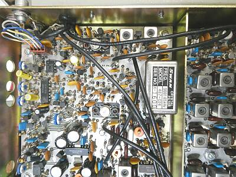 |
こちらは上カバーを開けた中にあるIF-AF基板です
クリスタルフィルタの左斜め上に見える２つのIFT風なコイルの間にNBのゲート回路（FET）があります
このFETの不良により感度が低下していました
使ってあったのは、MPF971だったのですが、手持ちのJ310に交換しました
受信に関しては、この解決だけで０．５μV 入力時S/N１０ｄｂ以上の感度が得られました
ＩＦ残留ノイズがやや多いようで、ＩＦゲインを少し絞ってやると、スペックの０．３５μＶ入力S/N１０ｄｂをクリアします |
| ■送信パワーが出ない |
|
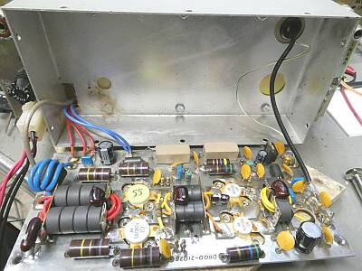 |
ファイナルユニットです
１３V供給ラインの100μF電解コンデンサが破裂していました（ケース裏に痕跡が残っています）
またバイアス制御のTIP42 というトランジスタも飛んでいました
下段にも記しているように、このボード上の半導体は全てNGという結果でした
原因は、過電圧？
本体の電源SWがOFFであっても、給電すればその電圧はそのままこのファイナルユニットに供給されます
消費電流の大きい半導体式のマシンにおいては、良く見受けられるパターン（設計）です |
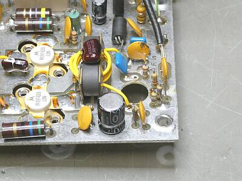 |
プリドライバ 2N3866 このベースに入っている抵抗が焼けています
Trを取り外してチェックすると、やはりNG
こちらはすぐに入手が出来て、既に交換済です
その後、ドライバ MRF433、ファイナル SRF2978 をチェックするも全てNG
全くパワーが出ない原因は、このファイナルユニットが全く機能していないことにありました
当初より、プリドライバの入力までは送信信号が出力されていることは確認できていました |
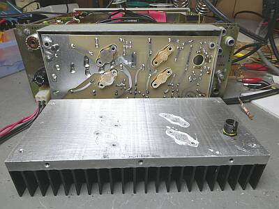 |
パワートランジスタの取付ビスを外し、ヒートシンクから基板を取るとこんな格好に
プリドライバ2N3866は、チェックのため取り外しています
ヒートシンク側でTO-220を掴む、そんな面白い？取付＆クーリングです
MRF433 eBayから購入済（中華ルート）
本機に採用されているSRF2978ですが、MRF458同等のようです
MRF458 直接の中華ルートで手配中
修理のためのパーツ代が馬鹿になりませんね（ちゃんと動作するものが届くかも、やや心配！ => 現実問題に？）
|
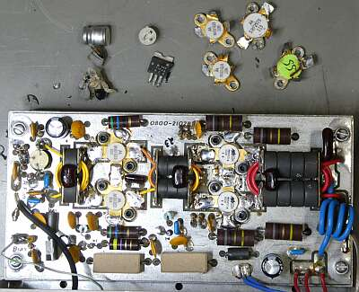 |
上に見える取り外したものは、パンクした電解コンデンサとトランジスタ一式です
基板は、やっと手掛けた修理の結果です
ファイナルのMRF458は、商談が怪しかったのでPass
簡単に入手できません
代わりに中華から入手した、MFR-454は大ハズレ！
テスターチェックでNGが分かるもの
別途入手した、MRF455はテスターチェックOKでしたので、取り敢えず取り付けて様子を見ることにしました
中華にしか頼れない＝ハズレを覚悟、です |
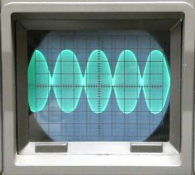 |
入手できたMRF455をファイナル素子に採用
定数の変更など行わず、一切元のままです
この場合でのツートーン信号の波形です
まずまず、でしょうか（オーバードライブ気味？）
得られるパワーは、Max５０W程度
この時、終段に１０A位流れます
ただし入手できたデバイスでの結果であって、これが正常にスペックを満足したものかどうか等は？？？です
もしMRF458（同等）が入手出来たら交換して試してみましょう |
|
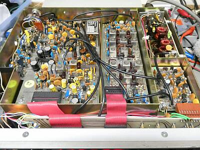 |
本体上側のケースを開いた状態です
左の大きな基板は、ＡＦ－ＩＦ（エキサイター）部
中央の基板は、プリセレクタ／バンドユニット
右奥は、送信LPFユニット
右手前はノイズブランカ基板 |
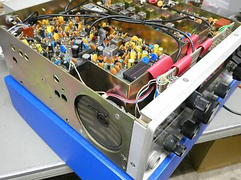 |
内蔵スピーカーは、こんなところに組付けられています |
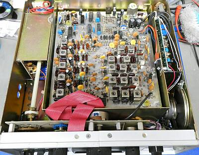 |
本体下（底）側です
左は、バンド切替スイッチです
中央は、VCO バンドフィルタ ユニット
スピーカーの奥は、ＰＬＬチューニング部 |
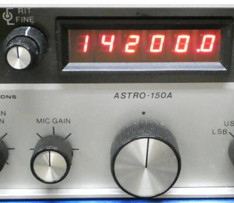 |
特徴的なダイヤルチューニング機構について
メインノブは、センター位置を中心に左右に１７０度程度回ります
くるくる回る一般的なチューニングダイヤルの動きではありません、Ｕｐ／Ｄｏｗｎです
最低１００Hzステップで、角度をつけるほど（大きく回すほど）ステップの移動が早くなります
１００Hz以下は、左上のFINEツマミで可変できます
このツマミは送受同様に可変できます
受信時だけの微調については、RITツマミで行うことが出来ます
使用には慣れが必要ですが、軍用機にあるようなサムホイールスイッチやトグルスイッチで行う周波数の移動に比べればはるかに楽というか実用的です |
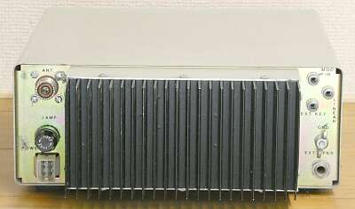 |
最後に、リアパネルの様子です
ANT
MOD-IN
EXT-SP
LINEAR-STBY
CW-KEY
ヒューズはファイナル部以外に供給するラインの２A
電源接続に関係して、ファイナル部を保護する要素はありません |